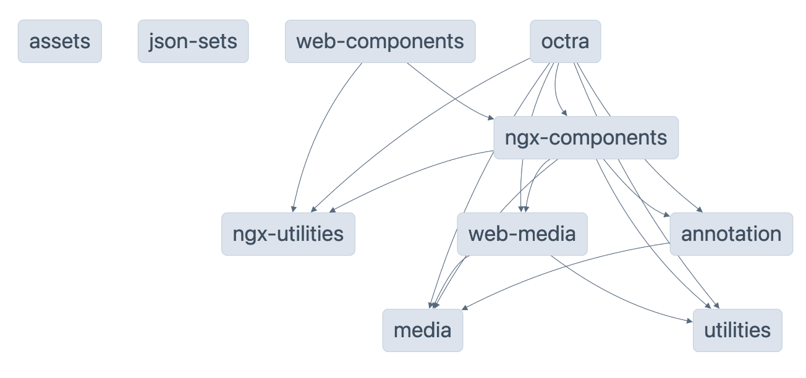

Octra libraries - v2.0.0
OCTRA libraries
OCTRA 2.0 and its libraries are still in development.
This sections shows an overview of all custom libraries used by OCTRA. All Angular-specific libraries start with "ngx".
| Package | Compatibility | Description |
|---|---|---|

|
Browser, NodeJS | library with custom functions used in the other libraries or apps like OCTRA |

|
Browser, NodeJS | all media related classes without dependencies to dom library |

|
Browser | all media related classes (for now audio only: audio playback a.s.o) |

|
Browser, NodeJS | library with shared assets in octra applications e.g. JSON schemata |

|
Browser, NodeJS | This library allows to define a set of valid objects using JSON and valid these. |

|
Browser, NodeJS | Objects and other classes used to handle annotation tasks |

|
Angular | Angular components e.g. for the signal displays |

|
Angular | library with custom functions used in angular projects |
| web-components | Browser | library with web-components containing components from ngx-components. These components can be used in other frameworks or Vanilla JS. See demo. |
API reference
You find more information about all classes and functions of each library here.
Dependency graph
Run npm run dep-graph to view the interactive dependency graph:
